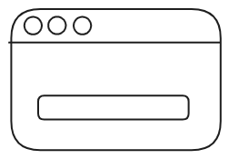
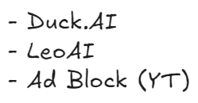
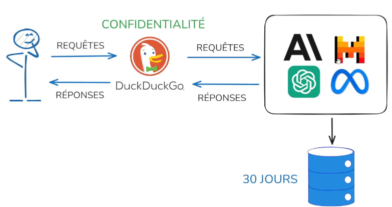

Les alternatives à ChatGPT
Qui suis-je?
Vestin Hategekimana
.

Assistant-doctorant en démographie (IDESO)
- Institut de socioéconomie et de démographie (UNIGE)
Migration et mobilité en Suisse en temps de crise
Passionné des sciences des données et la programmation (computational social sciences)
WeData
“Des stats et du code!”
Groupe étudiant ayant une passion pour le code et les statistiques: tutos et contenu!
- Notre site: https://wedata.ch/
- Notre chaîne YouTube: WeData
- Linkedin/Instagram/Facebook: @wedata_unige
À quoi ressemble ChatGPT?
À ça?

À quoi ressemble ChatGPT?
Probablement à ça…

Illustration de serveurs
ChatGPT c’est…
Un ensemble de modèles de OpenAI qui peut:
Créer et traiter du texte
Faire de la programmation
Créer et traiter des images
Créer et traiter du son
En bref, très puissants
Problème de vie privée

Nous vivons dans une période de bigdata
Les grandes compagnies collectent énormément de données sur nous
OpenAI collecte les données de conversation pour entraîner ses modèles
Transparence de la recherche:

Nos historiques de recherches sont plus transparents qu’on le croit
Avoir des conversations complètes c’est encore pire…

Solution pour les moteurs de recherche


Solution pour les moteurs de recherche

Solution pour les moteurs de recherche

Solution pour les moteurs de recherche


Le chat

Le chat, Mistral AI
Version sans compte: limité
- 10 requêtes/jour
- Modèle Français (Européen)
- Simple d’utilisation
Copilot

Copilot, Microsoft
Version sans compte très fournie et orientée éducation
- Requêtes illimitées
- Raisonnement
- Recherche web
- Utilisation de documents
- Génération d’image
- Podcast
- Questionnaire
Qwen

Qwen, Alibaba Cloud
Version sans compte: très fournie
- Requêtes illimitées
- Raisonnement
- Recherche web
- Utilisation de documents
- Génération d’image + édition
- Interface de code
- (Compte) Création de vidéo
Perplexity

Perplexity AI, Perplexity
- 2 Requêtes par jour
- Très bonne recherche web (filtre, nb. de ressource)
- (compte) Recherche illimité
- (compte) Deep search
Duck.AI


Duck.AI

Accessible
Privé
- Requêtes: limite journalière large
- Pas besoin de compte
- Historique locale
- Rétention des promptes 30 jours max
- Pas d’entrainement des réponses dans l’IA
Puissant
- GPT-4o mini
- GPT5-mini
- GPT-OSS 120b
- Llama 4 scout
- Claude Haiku 3.5
- Mistral small 3
Huggingface space

Pas besoin de compte
Pas de rétention de données
Accès à un large choix de modèles
- Text
- Image
- Vidéo
- Son
- Etc.
Exemple

Ollama

- Exécution locale de modèles : Permet aux utilisateurs d’exécuter des modèles d’IA localement sans dépendre de services en ligne.
- Confidentialité : Toutes les données sont conservées au niveau local, ce qui garantit une sécurité et une confidentialité accrues.
- Interface de ligne de commande : Fournit un outil simple et léger pour exécuter des modèles localement.
- Personnalisation : Permet aux utilisatrices et utilisateurs de créer et de modifier des modèles personnalisés pour des besoins spécifiques.